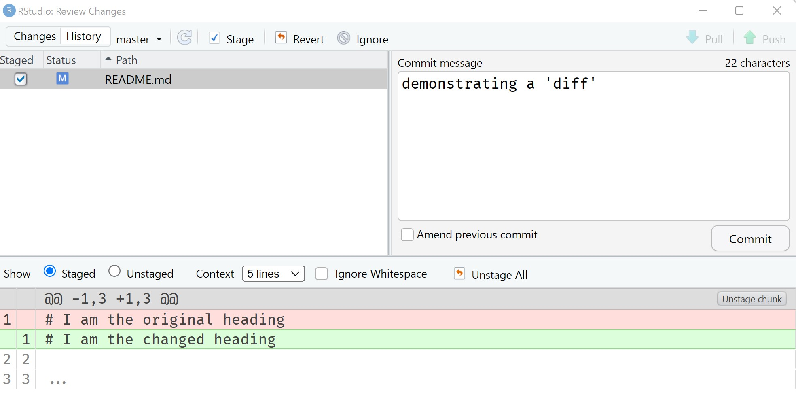
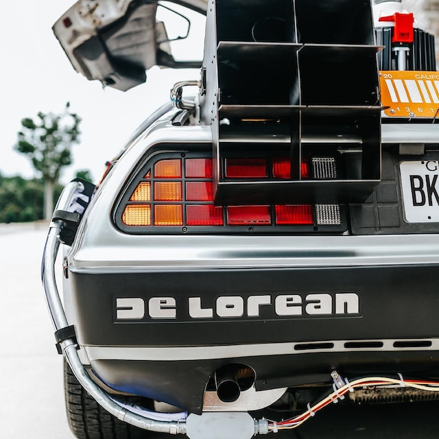

flowchart LR A[<font size=4> Kevin v1] --> B[<font size=4> Kevin v2] B --> C[<font size=4> Kevin v3] B --> D[<font size=4> Daniel v1] D --> E[<font size=4> Kevin + Daniel v4] C --> E
BBS Course: Good Software Engineering Practice for R Packages
Any opinions expressed in this presentation and on the following slides are solely those of the presenter and not necessarily those of their respective employer or company.
Manage complexity over time or between people
flowchart LR A[<font size=4> Kevin v1] --> B[<font size=4> Kevin v2] B --> C[<font size=4> Kevin v3] B --> D[<font size=4> Daniel v1] D --> E[<font size=4> Kevin + Daniel v4] C --> E

gitGraph commit commit commit commit commit
\(\leadsto\) Chain of versions with incremental changes


git checkout [commit hash to browse]git reset --hard [commit hash to reset to]my-file_final_v2_2019.R
gitGraph commit commit branch feature checkout feature commit commit checkout main commit
git checkout -b [my new branch]git checkout [branch name]
gitGraph commit commit branch feature checkout feature commit commit checkout main commit merge feature
gitGraph commit tag: "v0.0.1" commit branch feature-1 checkout feature-1 commit commit checkout main branch feature-2 checkout feature-2 commit checkout feature-1 commit checkout main commit tag: "bugfix" merge feature-1 tag: "v0.1.0" checkout feature-2 commit
sequenceDiagram
participant K as Kevin
participant GH as GitHub server
participant D as Daniel
K->>K: make change locally & commit to <feature>
K->>GH: push commit
K->>GH: open pull request
GH->>GH: run automated checks
K->>D: request review
D->>D: review code
D->>K: request changes
K->>K: implement changes locally & commit
K->>GH: push commit
GH->>GH: run automated checks
K->>D: request review
D->>D: review code
D->>GH: approve changes, unblocking merge
K->>GH: merge <feature> into <main>
GH->>GH: run automated checks on <main>
D->>GH: pull newest version of <main>
\(\leadsto\) making code-collaboration scalable
README.md file and set up your environment in posit cloud.